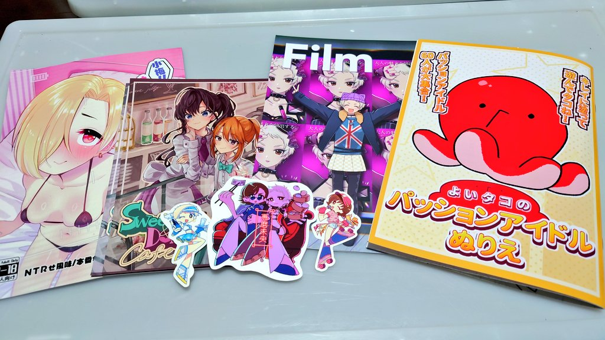
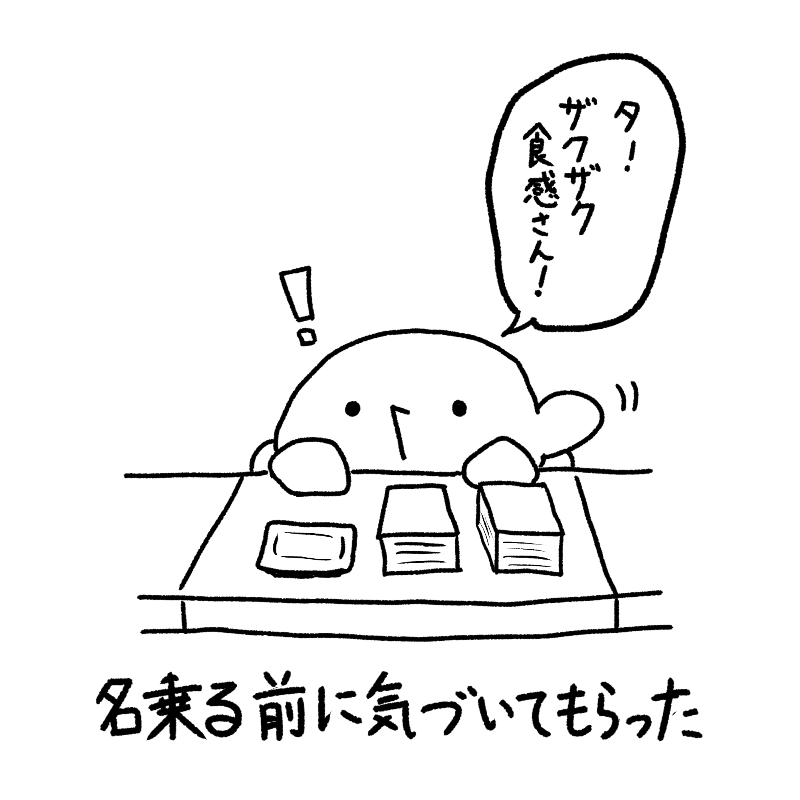
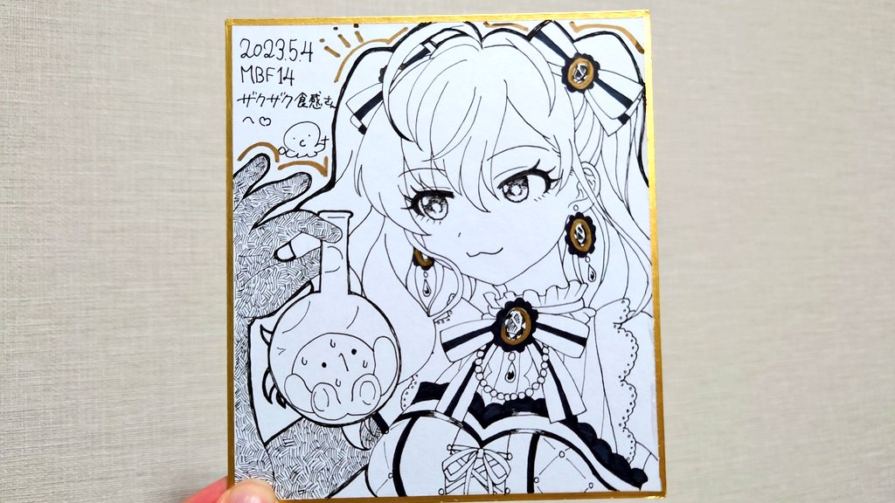
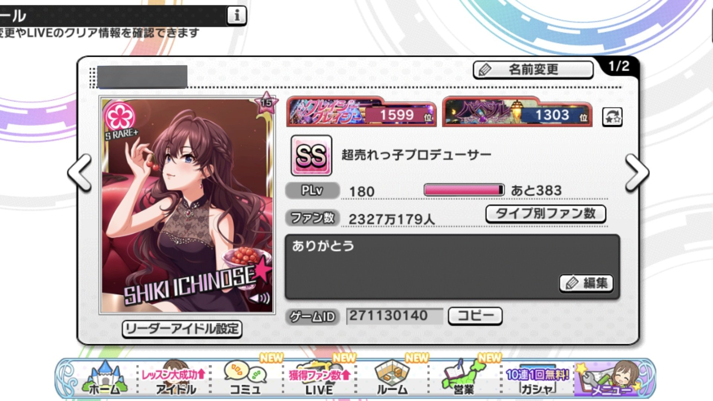
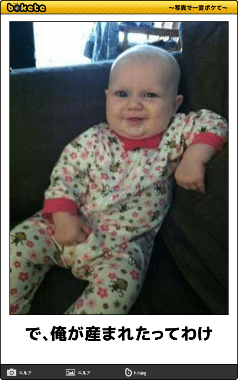

こんにちは、ザクザク食感です。
今日はMBF（アイマスオンリーの即売会）に行ってきました！！！
 ↑戦利品！
せっかく東京に暮らしてるし、こういうイベントに今まで行ったことないし、休みに部屋で腐ってると心が休まらない！と思い、散々迷って結局当日の深夜にチケットを購入しました。
いざ現地に来てみると、みんなフルグラTシャツを着ていたり担当の子のぬいを持っていたりで、ここにはアイマスが好きな人しかいないんだ！とちょっと感動しました。
最近は会社の陽キャっぽい人たちについていくのに必死で、周りにオタクがいなすぎる環境で過ごしていたので、東京にもちゃんと仲間がいるんだ；；と嬉しくなりました。
とは言っても実際の知り合いはいないので、誰と待ち合わせるでもなくフォロワーさんの同人誌を買いに直行しました。
リアルで会うフォロワーなんて今までに数人程度しかいませんし、女装して加工した顔面をネットに晒している身なので、現実の姿を見られて嫌われないかな……などと考えてしまって、めちゃくちゃ緊張します。フォロワーさんの絵さえ見られればそれでいいので、自分のことは黙っておこうと思いながら向かいました。
ブースに到着して、「こんにちは～……」と言った瞬間、
 ↑そのときの再現イラスト
気づかれた！！！マジでびっくりしました。
始まってすぐに行ったので、買いたかったほとんどのグッズをゲットできました！やったー！
ですが、僕がフォロワーに会うのに日和って会場に行けなかった場合を考えて取り置きは依頼していなかったので、色紙が売り切れで買うことができませんでした。
ですがなんと！！！余ってる色紙に！！！最高のイラストを描いていただけました！！！！！！！！！

ありがとうございます！！！！！！
本当に嬉しい……帰りの電車でずっと
ﾄｪｪｪｪｲ
↑この口でﾆﾁｬｧ……って笑ってました。ﾄｪｪｪｪｲ浅草線ってな ガハハ
他にも欲しかった同人誌を一通り買ってツイッターを眺めていると、僕がアイマスMADをつくったり、ピノキオピーやアメリカ民謡研究会を聴くきっかけになったフォロワーさんが会場に来ているという内容のツイートが流れてきました。
やばい！！！いくしかない！！！と思い連絡をして、無事合流することができ、感謝の意を直接伝えられました！！！やったー！
僕がそのフォロワーのアイマスMADを見て狂ったのが中3の頃なので、5年越しに実際に会うことができて感無量でした。インターネット最高！！！
↑僕が見て狂ったのはこの動画です！他の動画もすべて最高なのでぜひ見てください！！！
ここからはアイマスについての自分語りになります。
この先も読んでくださる方は、僕はアイマスが大好きで、一ノ瀬志希というアイドルが大好きだということを念頭に置いて読んでください！
僕はもともとアイマス垢でツイッターをしていました。数年前に削除してしまいましたが……
アイマスにハマったのが中1～中2ぐらいの頃で、たしかニコニコのランキングで見た動画（BE MY BABYとか）が面白かったとかがきっかけだったと思います。
いろんなアイドルを見るうちに一ノ瀬志希というアイドルに出会い、彼女の歌や性格、そして何より顔に惹かれ、どんどんアイマスというコンテンツ自体にハマっていきました。
朝起きたら学校に行く前にデレステ、帰ったらデレステ、月曜はデレラジを聞いて水曜はデレパを聞いて、スタミナを使い切ったらポケモンか2ちゃんかニコニコを徘徊する みたいな生活をずっと続けていました。
ニコニコでもアイマスについての動画を見るようになり、一人合作やデレステMADなどの文化に触れました。それ経由で知った映画や音楽は数えきれませんし、僕の感受性を培う上でとても大事な場所だったと思います。
高専に進んでもアイマスにハマりっぱなしで、むしろ供給が増えてより一層ハマっていきました。
担当のイベントではしっかりイベランもしました。
 クレイジークレイジー1599位、バベル1303位でした。デレステのイベントは2000位以上にならないとすべての報酬を取ることができなかったので、とても大変でした。
アイマスがきっかけでMAD動画もつくるようになり、一ノ瀬志希合作に参加したりもしました。
合作に↑の動画を提出したのですが、なんとその合作のトリとして採用され、本当に嬉しかったことを覚えています。楽しかったな……
じゃあなんでそんなに好きなアイマスのアカウントを削除したの？
理由はただ1つで、「一ノ瀬志希は実在しないということに気づいたから」です。
拗らせすぎ！と思うかもしれませんが、一ノ瀬志希のことが好きすぎて彼女のことしか考えていなかったので、思考もどんどん煮詰まっていって考えるだけでしんどくなってしまいます。
突然ですが、アイドルはいつアイドルを辞めるでしょうか？
年齢、売上、人気低迷など、いろいろな理由があると思いますが、本人やファンにとって一番気持ちいいのは、アイドルとしての夢を叶えて引退することだと僕は思います。
では、アイドルを育成するソーシャルゲームにおいて、アイドルはいつアイドルを辞めるでしょうか？アイドルとしての物語はいつ終わるのでしょうか？
ゲームのアイドルは永遠にアイドルで居続けてくれるからいいんじゃん、と言う意見もあると思います。実際、僕が大好きだった現実のアイドルも数年前に解散してしまって、未だに思い出して悲しくなります。もっと続いてたら……と何度思ったか分かりません。
それでも、僕は一ノ瀬志希というアイドルの果てを見たい……
孤独だった彼女がプロデューサーや仲間と出会って、挫折も経験しながら成長していく様子を見ていたので、これがソーシャルゲームである限りその物語が終わることがないということに絶望したことを覚えています。
書いていて「何言ってんのこいつ！」と思いますが、今でも上記のようなことを考えますし、新しく志希の物語を見るのも怖いです。
見るのは怖いけど今でも好きって、本当の偶像みたいだね……
そんなわけでアイマス垢を消してしまって、アイマスからは少し距離を置くようになりました。

重ねて言いますが、僕はアイマスが好きです。
架空のものに実在性を見出すコンテンツなので、僕みたいな人間にとって最高のコンテンツです。ですが、深く考えるとキリがないとも言えるので、こういう拗らせ方をしてしまったのかな～と思います。
アイマスから距離を置いてからも志希の供給があるたびにいろいろ見ていますし、アイマス垢の頃からのフォロワーもいるので情報は常に入ってきていましたが、やっぱりそれらを見るたびどこか胸が締め付けられる感じがします。
ですが、今日の即売会で、僕がなぜアイマスが好きなのかを思い出した気がします。
なにより、会場がとても温かかった（二重の意味で）。いろんなプロデューサーさんの担当への愛を感じました。
僕は好きなものについて語っている人が好きなので、アツい人が多いこのコンテンツがやっぱり好きです。
勇気出して外に出てよかった！いい思い出になりました。
現地で話させていただいたフォロワー！本当にありがとうございました！！
それでは、さようなら。